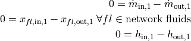

TESPy modules¶
The following sections give a detailed overview on the modules of TESPy. This includes all important settings of networks, components and connections as well as the underlying functionalities of the software.
At the end of this page, we provide an example on how to couple energy system simulation with TESPy.
Contents
Networks¶
The network class handles preprocessing, solving and postprocessing. We will walk you through all the important steps.
Setup¶
Network container¶
The TESPy network contains all data of your plant, which in terms of the calculation is represented by a nonlinear system of equations. The system variables of your TESPy network are:
mass flow,
pressure,
enthalpy and
the mass fractions of the network’s fluids.
The solver will solve for these variables. As stated in the introduction the list of fluids is passed to your network on creation. If your system includes fluid mixtures, you should always make use of the value ranges for the system variables. This improves the stability of the algorithm. Try to fit the boundaries as tight as possible, for instance, if you know that the maximum pressure in the system will be at 10 bar, use it as upper boundary.
Note
Value ranges for pure fluids are not required as these are dealt with automatically.
from tespy.networks import Network
fluid_list = ['CO2', 'H2O', 'N2', 'O2', 'Ar']
my_plant = Network(fluids=fluid_list)
my_plant.set_attr(p_unit='bar', h_unit='kJ / kg')
my_plant.set_attr(p_range=[0.05, 10], h_range=[15, 2000])
Note
It is possible to specify the fluid property back-end of the network fluids by adding the name of the back-end in front of the fluid’s name within the list of fluids of your network. For example:
from tespy.networks import Network
fluid_list = ['CO2', 'BICUBIC::H2O', 'INCOMP::DowQ']
Network(fluids=fluid_list)
If you do not specify a back-end, the default back-end HEOS
will be used (as for CO2). In this example, H2O will be
using the BICUBIC back-end and DowQ the back-end for
incompressible fluids INCOMP. For an overview of the back-ends
available please refer to the
fluid property section.
It is not possible to use the same fluid in different back-ends!
Printouts and logging¶
TESPy comes with an inbuilt logger. If you want to keep track of debugging-messages, general information, warnings or errors you should enable the logger. At the beginning of your python script e.g. add the following lines:
from tespy.tools import logger
import logging
logger.define_logging(
log_path=True, log_version=True,
screen_level=logging.INFO, file_level=logging.DEBUG
)
The log-file will be saved to ~/.tespy/log_files/ by default. All
available options are documented in the
API.
Prior to solving the network there are options regarding the console printouts for the calculation progress. Specify, if you want to enable or disable convergence progress printouts:
# disable iteration information printout
myplant.set_attr(iterinfo=False)
# enable iteration information printout
myplant.set_attr(iterinfo=True)
Adding connections¶
As seen in the introduction, you will have to create your networks from the components and the connections between them. You can add connections directly or via subsystems using the corresponding methods:
myplant.add_conns()
myplant.add_subsys()
Note
You do not need to add the components to the network, as they are inherited via the added connections. After having set up your network and added all required elements, you can start the calculation.
Busses: Energy Connectors¶
Another type of connection is the bus: Busses are connections for massless transfer of energy e.g. in turbomachines or heat exchangers. They can be used to model motors or generators, too. Add them to your network with the following method:
myplant.add_busses()
You will learn more about busses and how they work in this part.
Start calculation¶
You can start the solution process with the following line:
myplant.solve(mode='design')
This starts the initialisation of your network and proceeds to its calculation. The specification of the calculation mode is mandatory, This is the list of available keywords:
modeis the calculation mode ('design'-calculation or'offdesign'-calculation).init_pathis the path to the network folder you want to use for initialisation.design_pathis the path to the network folder which holds the information of your plant’s design point.max_iteris the maximum amount of iterations performed by the solver.min_iteris the minimum amount of iterations before a solution can be accepted (given the convergence criterion is satisfied).init_onlystop after initialisation (True/False).init_previoususe starting values from previous simulation (True/False).use_cudause cuda instead of numpy for matrix inversion, speeds up simulation in some cases by outsourcing calculation to graphics card. For more information please visit the cupy documentation.always_all_equationsyou can skip recalculation of converged equations in the calculation process if you specify this parameter to beFalse. Default value isTrue.
There are two calculation modes available ('design' and
'offdesign'), which are explained in the subsections below. If you
choose offdesign as calculation mode the specification of a
design_path is mandatory.
The usage of an initialisation path is always optional but highly recommended,
as the convergence of the solution process will be improved, if you provide
good starting values. If you do not specify an init_path, the
initialisation from saved results will be skipped.
init_only=True usually is used for debugging. Or, you could use this
feature to export a not solved network, if you want to do the parametrisation
in .csv-files rather than your python script.
The init_previous parameter can be used in design and offdesign
calculations and works very similar to specifying an init_path.
In contrast, starting values are taken from the previous calculation. Specifying
the ìnit_path overwrites init_previous.
Design mode¶
The design mode is used to design your system and is always the first calculation of your plant. The offdesign calculation is always based on a design calculation! Obviously as you are designing the plant the way you want, you are flexible to choose the parameters to specify. However, you can not specify parameters that are based on a design case, as for example the isentropic efficiency characteristic function of a turbine or a pump. Specifying a value for the efficiency is of course possible.
Offdesign mode¶
The offdesign mode is used to calculate the performance of your plant, if
parameters deviate from the plant’s design point. This can be partload
operation, operation at different temperature or pressure levels etc.. Thus,
before starting an offdesing calculation you have to design your plant first.
By stating 'offdesign' as calculation mode, components and
connections will switch to the offdesign mode. This means that all
parameters provided as design parameters will be unset and all parameters
provided as offdesign parameters will be set instead. You can specify a
connection’s or component’s (off-)design parameters using the
set_attr method.
For example, for a condenser you would usually design it to a maximum terminal temperature difference, in offdesign the heat transfer coefficient is selected. The heat transfer coefficient is calculated in the preprocessing of the offdesign case based on the results from the design-case. Of course, this applies to all other parameters in the same way. Also, the pressure drop is a result of the geometry for the offdesign case, thus we swap the pressure ratios with zeta values.
mycomponent.set_attr(design=['ttd_u', 'pr1', 'pr2'],
offdesign=['kA', 'zeta1', 'zeta2'])
Note
Some parameters come with characteristic functions based on the design case
properties. This means, that e.g. the isentropic efficiency of a turbine
is calculated as function of the actual mass flow to design mass flow
ratio. You can provide your own (measured) data or use the already existing
data from TESPy. All standard characteristic functions are available at
tespy.data.
For connections it works in the same way, e.g. write
myconnection.set_attr(design=['h'], offdesign=['T'])
if you want to replace the enthalpy with the temperature for your offdesign. The temperature is a result of the design calculation and that value is then used for the offdesign calculation in this example.
To solve your offdesign calculation, use:
myplant.solve(mode='offdesign', design_path='path/to/network_designpoint')
Solving¶
A TESPy network can be represented as a linear system of nonlinear equations,
consequently the solution is obtained with numerical methods. TESPy uses the
n-dimensional Newton–Raphson method to find the systems solution, which may
only be found, if the network is parameterized correctly. The number of
variables n is  .
.
The algorithm requires starting values for all variables of the system, thus an initialisation of the system is run prior to calculating the solution. High quality initial values are crutial for convergence speed and stability, bad starting values might lead to instability and diverging calculation can be the result. There are different levels for the initialisation.
Initialisation¶
The initialisation is performed in the following steps.
General preprocessing:
check network consistency and initialise components (if network topology is changed to a prior calculation only).
perform design/offdesign switch (for offdesign calculations only).
preprocessing of offdesign case using the information from the
design_pathargument.
Finding starting values:
fluid propagation.
fluid property initialisation.
initialisation from previous simulation run (
ìnit_previous).initialisation from .csv (setting starting values from
init_pathargument).
The network check is used to find errors in the network topology, the
calculation can not start without a successful check. For components, a
preprocessing of some parameters is necessary. It is performed by the
comp_init method of the components. You will find the methods in the
components module. The design/offdesign switch is
described in the network setup section. For offdesign calculation the
design_path argument is required. The design point information is
extracted from that path in preprocessing. For this, you will need to export
your network’s design point information using:
myplant.save('path/for/export')
Starting value generation for your calculations starts with the fluid
propagation. The fluid propagation is a very important step in the
initialisation. Often, you will specify the fluid at one point of the
network only, all other connections are missing an initial information on the
fluid, if you are not using an init_path. The fluid propagation will
push/pull the specified fluid through the network. If you are using combustion
chambers these will be starting points and a generic flue gas composition will
be calculated prior to the propagation. You do not necessarily need to state a
starting value for the fluid at every point of the network.
Note
If the fluid propagation fails, you often experience an error, where the fluid property database can not find a value, because the fluid is ‘nan’. Providing starting values manually can fix this problem.
If available, the fluid property initialisation uses the user specified starting
values or the results from the previous simulation. Otherwise generic starting
values are generated on basis of which components a connection is linked to.
If you do not want to use the results of a previous calculation, you need to
specify init_previous=False on the Network.solve method call.
Last step in starting value generation is the initialisation from a saved
network structure. In order to initialise your calculation from the
init_path, you need to provide the path to the saved/exported network.
If you specify an init_path TESPy searches through the connections file
for the network topology and if the corresponding connection is found, the
starting values for the system variables are extracted from the connections
file.
Note
The files do not need to contain all connections of your network. You can
build your network step by step and initialise the existing parts of your
network from the init_path. Be aware that a change within the fluid
vector does not allow this practice! If you plan to use additional fluids
in parts of the network you have not touched until now, you will need to
state all fluids from the beginning.
Algorithm¶
In this section we will give you an introduction to the solving algorithm implemented.
Newton–Raphson method¶
The Newton–Raphson method requires the calculation of residual values for the equations and of the partial derivatives to all system variables (Jacobian matrix). In the next step the matrix is inverted and multiplied with the residual vector to calculate the increment for the system variables. This process is repeated until every equation’s result in the system is “correct”, thus the residual values are smaller than a specified error tolerance. All equations are of the same structure:

calculate the residuals

Jacobian matrix J

derive the increment

while

Note
You have to provide the exact amount of required parameters (neither less nor more) and the parametrisation must not lead to linear dependencies. Each parameter you set for a connection and each energy flow you specify for a bus will add one equation to your system. On top, each component provides a different amount of basic equations plus the equations provided by your component specification.
For example, consider a pump: Total mass flow as well as the fluid mass
fractions of the mixture entering the pump will be identical at the outlet. The
pump delivers two mandatory equations. If you additionally specify, e.g. the
power  to be 1000 W, the set of equations will look like this:
to be 1000 W, the set of equations will look like this:

Convergence stability¶
One of the main downsides of the Newton–Raphson method is that the initial stepwidth is very large and that it does not know physical boundaries, for example mass fractions smaller than 0 and larger than 1 or negative pressure. Also, the large stepwidth can adjust enthalpy or pressure to quantities that are not covered by the fluid property databases. This would cause an inability e.g. to calculate a temperature from pressure and enthalpy in the next iteration of the algorithm. In order to improve convergence stability, we have added a convergence check.
The convergence check manipulates the system variables after the increment has been added. This manipulation has four steps, the first two are always applied:
Cut off fluid mass fractions smaller than 0 and larger than 1. This way a mass fraction of a single fluid components never exceeds these boundaries.
Check, whether the fluid properties of pure fluids are within the available ranges of CoolProp and readjust the values if not.
The next two steps are applied, if the user did not specify an
init_path and the iteration count is lower than 3, thus in the first
three iteration steps of the algorithm only. In other cases this convergence
check is skipped.
Fox mixtures: check, if the fluid properties (pressure, enthalpy and mass flow) are within the user specified boundaries (
p_range, h_range, m_range) and if not, cut off higher/lower values.Check the fluid properties of the connections based on the components they are connecting. For example, check if the pressure at the outlet of a turbine is lower than the pressure at the inlet or if the flue gas composition at a combustion chamber’s outlet is within the range of a “typical” flue gas composition. If there are any violations, the corresponding variables are manipulated. If you want to look up, what exactly the convergence check for a specific component does, look out for the
convergence_checkmethods in thetespy.components module.
In a lot of different tests the algorithm has found a near enough solution after the third iteration, further checks are usually not required.
Note
It is possible to improve the convergence stability manually when using
pure fluids. If you know the fluid’s state is liquid or gaseous prior to
the calculation, you may provide the according value for the keyword e.g.
myconn.set_attr(state='l'). The convergence check manipulates the
enthalpy values so that the fluid is always in the desired state at that
point. For an example see the release information of
version 0.1.1. Please note, that
you need to adjust the other parts of the script to the latest API.
Calculation speed improvement¶
For improvement of calculation speed, the calculation of specific derivatives
is skipped if possible. If you specify always_all_equations=False for
your simulation, equations may also be skipped: There are two criteria for
equations and one criterion for derivatives that are checked for calculation
intensive operations, e.g. whenever fluid property library calls are necessary:
For component equations the recalculation of the residual value is skipped,
only if you specified
always_all_equations=Falseandif the absolute of the residual value of that equations is lower than the threshold of
1e-12in the iteration before andthe iteration count is not a multiple of 4.
Connections equations are skipped
only if you specified
always_all_equations=Falseandif the absolute of the residual value of that equations is lower than the threshold of
1e-12in the iteration before andthe iteration count is not a multiple of 2 and
the specified property is not temperature.
The calculation of derivatives is skipped, if the change of the corresponding
variable was below a threshold of 1e-12 in the iteration before.
Again, this does not apply to temperature value specification, as especially
when using fluid mixtures, the convergence stability is very sensitive to
these equations and derivatives.
Note
In order to make sure, that every equations is evaluated at least twice, the minimum amount of iterations before convergence can be accepted is at 4.
Troubleshooting¶
In this section we show you how you can troubleshoot your calculation and list
up common mistakes. If you want to debug your code, make sure to enable the
logger and have a look at the log-file at ~/.tespy/ (or at your
specified location).
First of all, make sure your network topology is set up correctly, TESPy will prompt an Error, if not. TESPy will prompt an error, too, if you did not provide enough or if you provide too many parameters for your calculation, but you will not be given an information which specific parameters are under- or overdetermined.
Note
Always keep in mind, that the system has to find a value for mass flow, pressure, enthalpy and the fluid mass fractions. Try to build up your network step by step and have in mind, what parameters will be determined by adding an additional component without any parametrisation. This way, you can easily determine, which parameters are still to be specified.
When using multiple fluids in your network, e.g.
fluids=['water', 'air', 'methane'] and at some point you want to have
water only, you still need to specify the mass fractions for both air and
methane (although beeing zero) at that point
fluid={'water': 1, 'air': 0, 'methane': 0}. Also, setting
fluid={water: 1}, fluid_balance=True will still not be sufficient, as
the fluid_balance parameter adds only one equation to your system.
If you are modeling a cycle, e.g. the clausius rankine cylce, you need to make a cut in the cycle using the cycle_closer or a sink and a source not to overdetermine the system. Have a look in the heat pump tutorial to understand why this is important and how it can be implemented.
If you have provided the correct number of parameters in your system and the calculations stops after or even before the first iteration, there are four frequent reasons for that:
Sometimes, the fluid property database does not find a specific fluid property in the initialisation process, have you specified the values in the correct unit?
Also, fluid property calculation might fail, if the fluid propagation failed. Provide starting values for the fluid composition, especially, if you are using drums, merges and splitters.
A linear dependency in the Jacobian matrix due to bad parameter settings stops the calculation (overdetermining one variable, while missing out on another).
A linear dependency in the Jacobian matrix due to bad starting values stops the calculation.
The first reason can be eliminated by carefully choosing the parametrization. A linear dependency due to bad starting values is often more difficult to resolve and it may require some experience. In many cases, the linear dependency is caused by equations, that require the calculation of a temperature, e.g. specifying a temperature at some point of the network, terminal temperature differences at heat exchangers, etc.. In this case, the starting enthalpy and pressure should be adjusted in a way, that the fluid state is not within the two-phase region: The specification of temperature and pressure in a two-phase region does not yield a distinct value for the enthalpy. Even if this specific case appears after some iterations, better starting values often do the trick.
Another frequent error is that fluid properties move out of the bounds given by the fluid property database. The calculation will stop immediately. Adjusting pressure and enthalpy ranges for the convergence check might help in this case.
Note
If you experience slow convergence or instability within the convergence process, it is sometimes helpful to have a look at the iteration information. This is printed by default and provides information on the residuals of your systems’ equations and on the increments of the systems’ variables. Maybe it is only one variable causing the instability, its increment is much larger than the increment of the other variables?
Did you experience other errors frequently and have a workaround/tips for resolving them? You are very welcome to contact us and share your experience for other users!
Postprocessing¶
A postprocessing is performed automatically after the calculation finished. You have further options:
Automatically create a documentation of your model.
Print the results to prompt (
print_results()).Save the results in structure of .csv-files (
save()).Generate fluid property diagrams with an external tool.
Automatic model documentation¶
Using the automatic TESPy model documentation you can create an overview of all input parameters, specifications and equations as well as characteristics applied in LaTeX format. This enables high
transparency,
readability and
reproducibility.
In order to use the model documentation, you need to import the corresponding method and pass your network information. At the moment, you can the following optional arguments to the method:
path: Basepath, where the LaTeX data and figures are exported to.filename: Filename of the report.fmt: A formatting dictionary, for a sample see below.
from tespy.tools import document_model
fmt = {
'latex_body': True, # adds LaTeX body to compile report out of the box
'include_results': True, # include parameter specification and results
'HeatExchanger': { # for components of class HeatExchanger
'params': ['Q', 'ttd_l', 'ttd_u', 'pr1', 'pr2']}, # change columns displayed
'Condenser': { # for components of class HeatExchanger
'params': ['Q', 'ttd_l', 'ttd_u', 'pr1', 'pr2']
'float_fmt': '{:,.2f}'}, # change float format of data
'Connection': { # for Connection instances
'p': {'float_fmt': '{:,.4f}'}, # change float format of pressure
's': {'float_fmt': '{:,.4f}'},
'h': {'float_fmt': '{:,.2f}'},
'params': ['m', 'p', 'h', 's'] # list results of mass flow, ...
'fluid': {'include_results': False} # exclude results of fluid composition
},
'include_results': True, # include results
'draft': False # disable draft mode
}
document_model(mynetwork, fmt=fmt)
Note
Specified values are displayed in any case. The selection of which parameters to show and which to exclude only applies to results.
After having exported the LaTeX code, you can simply use \input{}
in your main LaTeX document to include the documentation of your model. In
order to compile correctly you need to load the following LaTeX packages:
graphicx
float
hyperref
booktabs
amsmath
units
cleveref
longtable
For generating different file formats, like markdown, html or restructuredtext, you could try the pandoc library. For examples, of how the reports look you can have a look at the examples repository, or just try it yourself :).
This feature is introduced in version 0.4.0 and still subject to changes. If you have any suggestions, ideas or feedback, you are very welcome to submit an issue on our GitHub or even open a pull request.
Results printing¶
To print the results in your console use the print_results() method.
It will print tables containing the component, connection and bus properties.
Some of the results will be colored, the colored results indicate
if a parameter was specified as value before calculation.
if a parameter is out of its predefined value bounds (e.g. efficiency > 1).
if a component parameter was set to
'var'in your calculation.
The color for each of those categories is different and might depend on the console settings of your machine. If you do not want the results to be colored you can instead call the method the following way:
myplant.print_results(colored=False)
If you want to limit your printouts to a specific subset of components,
connections and busses, you can specify the printout parameter to block
individual result printout.
mycomp.set_attr(printout=False)
myconn.set_attr(printout=False)
mybus.set_attr(printout=False)
If you want to prevent all printouts of a subsystem, add something like this:
# connections
for c in mysubsystem.conns.values():
c.set_attr(printout=False)
# components
for c in mysubsystem.comps.values():
c.set_attr(printout=False)
Save your results¶
If you choose to save your results the specified folder will be created containing information about the network, all connections, busses, components and characteristics.
In order to perform calculations based on your results, you can access all components’ and connections’ parameters:
The easiest way to access the results of one specific component looks like this
eff = mycomp.eta_s.val # isentropic efficiency of mycomp
P = mycomp.P.val
and similar for connection parameters:
mass_flow = myconn.m.val # value in specified network unit
mass_flow_SI = myconn.m.val_SI # value in SI unit
mass_fraction_oxy = myconn.fluid.val['O2'] # mass fraction of oxygen
specific_volume = myconn.vol.val # value in specified network unit
specific_entropy = myconn.s.val # value in specified network unit
volumetric_flow = myconn.v.val # value in specified network unit
specific_exergy = myconn.ex_physical # SI value only
On top of that, you can access pandas DataFrames containing grouped results for the components, connections and busses. The instance of class Network provides a results dictionary.
# key for connections is 'Connection'
results_for_conns = myplant.results['Connection']
# keys for components are the respective class name, e.g.
results_for_turbines = myplant.results['Turbine']
results_for_heat_exchangers = myplant.results['HeatExchanger']
# keys for busses are the labels, e.g. a Bus labeled 'power input'
results_for_mybus = myplant.results['power input']
The index of the DataFrames is the connection’s or component’s label.
results_for_specific_conn = myplant.results['Connection'].loc['myconn']
results_for_specific_turbine = myplant.results['Turbine'].loc['turbine 1']
results_for_component_on_bus = myplant.results['power input'].loc['turbine 1']
The full list of connection and component parameters can be obtained from the respective API documentation.
Creating fluid property diagrams¶

Figure: logph diagram of NH3 with a simple heat pump cycle.¶

Figure: Ts diagram of NH3 with a simple heat pump cycle.¶
CoolProp has an inbuilt feature for creating fluid property diagrams.
Unfortunately, the handling is not very easy at the moment. We recommend using
fluprodia (Fluid Property Diagram) instead. You can create and customize
different types of diagrams for all pure and pseudo-pure fluids available in
CoolProp. In order to plot your process data into a diagram, you can use the
get_plotting_data method of each component. The method returns a
dictionary, that can be passed as **kwargs to the
calc_individual_isoline method of a fluprodia
FluidPropertyDiagram object. The fluprodia documentation provides
examples of how to plot a process into different diagrams, too. For more
information on fluprodia have a look at the
online documentation. You can
install the package with pip.
pip install fluprodia
Note
The plotting data a returned from the get_plotting_data as a
nested dictionary. The first level key contains the connection id of the
state change (change state from incoming connection to outgoing
connection). The table below shows the state change and the respective id.
component |
state from |
state to |
id |
|---|---|---|---|
components with one inlet and one outlet only |
|
|
|
class HeatExchanger and subclasses |
|
|
|
|
|
|
|
class ORCEvaporator |
|
|
|
|
|
|
|
|
|
|
|
class Merge |
|
|
|
|
|
|
|
… |
… |
… |
|
class Drum |
|
|
|
All other components do not return any information as either there is no change in state or the state change is accompanied by a change in fluid composition.
Network reader¶
The network reader is a useful tool to import networks from a data structure using .csv-files. In order to re-import an exported TESPy network, you must save the network first.
myplant.save('mynetwork')
This generates a folder structure containing all relevant files defining your network (general network information, components, connections, busses, characteristics) holding the parametrization of that network. You can re-import the network using following code with the path to the saved documents. The generated network object contains the same information as a TESPy network created by a python script. Thus, it is possible to set your parameters in the .csv-files, too. The imported network is handled identically as a manually created network.
from tespy.networks import load_network
imported_plant = load_network('path/to/mynetwork')
imported_plant.solve('design')
Note
Imported busses, components and connections are accessible by their label,
e.g. imported_plant.busses['total heat output'],
imported_plant.get_comp('condenser') and
imported_plant.get_conn('myconnectionlabel') respectively. If
you did not provide labels for your connections, by default, the
connection’s label will be according to this principle:
'source-label:source-id_target-label:target-id', where source and
target are the labels of the connected components.
Components¶
In this section we will introduce you into the details of component parametrisation and component characteristics. At the end of the section we show you, how to create custom components.
List of components¶
More information on the components can be gathered from the code documentation. We have linked the base class containing a figure and basic information as well as the equations.
Basics
Combustion
Diabatic combustion chamber(Advanced version of combustion chamber, featuring heat losses and pressure drop)
Heat exchangers
Nodes
Piping
Reactors
Turbomachinery
List of custom components¶
Here we list the components integrated in the customs module.
Component parametrisation¶
All parameters of components are objects of a DataContainer class. The
data container for component parameters it is called
ComponentProperties, ComponentCharacteristics for component
characteristics and ComponentCharacteristicMaps for characteristic
maps. The main purpose of having a data container for the parameters (instead
of pure numbers), is added flexibility for the user. There are different ways
for you to specify and access component parameters.
Component parameters¶
The example shows different ways to specify the heat transfer coefficient of an evaporator and how to unset the parameter again.
from tespy.components import HeatExchanger
from tespy.tools import ComponentProperties as dc_cp
import numpy as np
he = HeatExchanger('evaporator')
# specify the value
he.set_attr(kA=1e5)
# specify via dictionary
he.set_attr(kA={'val': 1e5, 'is_set': True})
# set data container parameters
he.kA.set_attr(val=1e5, is_set=True)
# possibilities to unset a value
he.set_attr(kA=np.nan)
he.set_attr(kA=None)
he.kA.set_attr(is_set=False)
Grouped parameters¶
Grouped parameters are used whenever a component property depends on multiple parameters. For instance, the pressure loss calculation via Darcy-Weissbach requires information about the length, diameter and roughness of the pipe. The solver will prompt a warning, if you do not specify all parameters required by a parameter group. If parameters of the group are missing, the equation will not be implemented by the solver.
from tespy.components import Pipe
import numpy as np
my_pipe = Pipe('pipe')
# specify grouped parameters
my_pipe.set_attr(D=0.1, L=20, ks=0.00005)
# the solver will not apply an equation, since the information of the
# pipe's length is missing.
my_pipe.set_attr(D=0.1, ks=0.00005)
There are several components using parameter groups:
- heat_exchanger_simple and pipe
hydro_group(D,L,ks)kA_group(kA,Tamb)kA_char_group(kA_char,Tamb)
- solar_collector
hydro_group(D,L,ks)energy_group(E,eta_opt,lkf_lin,lkf_quad,A,Tamb)
- parabolic_trough
hydro_group(D,L,ks)energy_group(E,eta_opt,aoi,doc,c_1,c_2,iam_1,iam_2,A,Tamb)
- compressor
char_map_eta_s_group(char_map_eta_s,igva)char_map_pr_group(char_map_pr,igva)
Custom variables¶
It is possible to use component parameters as variables of your system of
equations. In the component parameter list, if a parameter can be a string, it
is possible to specify this parameter as custom variable. For example, given
the pressure ratio pr, length L and roughness ks of a
pipe you may want to calculate the pipe’s diameter D required to
achieve the specified pressure ratio. In this case you need to specify the
diameter the following way.
from tespy.components import Pipe
from tespy.tools import ComponentProperties as dc_cp
import numpy as np
# custom variables
my_pipe = Pipe('my pipe')
# make diameter variable of system
my_pipe.set_attr(pr=0.98, L=100, ks=0.00002, D='var')
# a second way of specifying this is similar to the
# way used in the component parameters section
# val will be used as starting value
my_pipe.set_attr(pr=0.98, L=100, ks=0.00002)
my_pipe.set_attr(D={'val': 0.2, 'is_set': True, 'is_var': True})
It is also possible to set value boundaries for you custom variable. You can do this, if you expect the result to be within a specific range. But beware: This might result in a non converging simulation, if the actual value is out of your specified range.
# data container specification with identical result,
# benefit: specification of bounds will increase stability
my_pipe.set_attr(D={
'val': 0.2, 'is_set': True, 'is_var': True,
'min_val': 0.1, 'max_val': 0.3})
Component characteristics¶
Several components integrate parameters using a characteristic function. These
parameters come with default characteristics. The default characteristics
available can be found in the <tespy.data> module. Of course, it is
possible to specify your own characteristic functions.
Note
There are two different characteristics specifications
The characteristic function can be an auxiliary parameter of a different
component property. This is the case for kA_char1
and kA_char2 of heat exchangers as well as the characteristics of a
combustion engine: tiP_char, Q1_char, Q2_char
and Qloss_char.
For all other components, the characteristic function is an individual parameter of the component.
What does this mean?
For the auxiliary functionality the main parameter, e.g. kA_char
of a heat exchanger must be set .kA_char.is_set=True.
For the other functionality the characteristics parameter must be
set e.g. .eta_s_char.is_set=True.
For example, kA_char specification for heat exchangers:
from tespy.components import HeatExchanger
from tespy.tools.characteristics import load_default_char as ldc
from tespy.tools.characteristics import CharLine
import numpy as np
he = HeatExchanger('evaporator')
# the characteristic function requires the design value of the property,
# therefore the design value of kA must be set and additonally we set
# the kA_char method. This is performed automatically, if you specify the
# kA_char as offdesign parameter (usual case).
he.set_attr(kA={'design': 1e5}, kA_char={'is_set': True})
# use a characteristic line from the defaults: specify the component, the
# parameter and the name of the characteristic function. Also, specify, what
# type of characteristic function you want to use.
kA_char1 = ldc('heat exchanger', 'kA_char1', 'DEFAULT', CharLine)
kA_char2 = ldc('heat exchanger', 'kA_char2', 'EVAPORATING FLUID', CharLine)
he.set_attr(kA_char2=kA_char2)
# specification of a data container yields the same result. It is
# aditionally possible to specify the characteristics parameter, e.g. mass flow
# for kA_char1 and volumetric flow for kA_char2
he.set_attr(
kA_char1={'char_func': kA_char1, 'param': 'm'},
kA_char2={'char_func': kA_char2, 'param': 'v'})
# or use custom values for the characteristic line e.g. kA vs volumetric flow
x = np.array([0, 0.5, 1, 2])
y = np.array([0, 0.8, 1, 1.2])
kA_char1 = CharLine(x, y)
he.set_attr(kA_char1={'char_func': kA_char1, 'param': 'v'})
Full working example for eta_s_char specification of a turbine.
from tespy.components import Sink, Source, Turbine
from tespy.connections import Connection
from tespy.networks import Network
from tespy.tools.characteristics import CharLine
import numpy as np
fluid_list = ['water']
nw = Network(fluids=fluid_list, p_unit='bar', T_unit='C', h_unit='kJ / kg')
si = Sink('sink')
so = Source('source')
t = Turbine('turbine')
inc = Connection(so, 'out1', t, 'in1')
outg = Connection(t, 'out1', si, 'in1')
nw.add_conns(inc, outg)
# design value specification, cone law and eta_s characteristic as
# offdesign parameters
eta_s_design = 0.855
t.set_attr(eta_s=eta_s_design, design=['eta_s'], offdesign=['eta_s_char','cone'])
# Characteristics x as m/m_design and y as eta_s(m)/eta_s_design
# make sure to cross the 1/1 point (design point) to yield the same
# output in the design state of the system
line = CharLine(
x=[0.1, 0.3, 0.5, 0.7, 0.9, 1, 1.1],
y=np.array([0.6, 0.65, 0.75, 0.82, 0.85, 0.855, 0.79]) / eta_s_design)
# default parameter for x is m / m_design
t.set_attr(eta_s_char={'char_func': line})
inc.set_attr(fluid={'water': 1}, m=10, T=550, p=110, design=['p'])
outg.set_attr(p=0.5)
nw.solve('design')
nw.save('tmp')
# change mass flow value, e.g. 3 kg/s and run offdesign calculation
inc.set_attr(m=3)
nw.solve('offdesign', design_path='tmp')
# isentropic efficiency should be at 0.65
nw.print_results()
# alternatively, we can specify the volumetric flow v / v_design for
# the x lookup
t.set_attr(eta_s_char={'param': 'v'})
nw.solve('offdesign', design_path='tmp')
nw.print_results()
Instead of writing your custom characteristic line information directly into
your Python script, TESPy provides a second method of implementation: It is
possible to store your data in the HOME/.tespy/data folder and import
from there. For additional information on formatting and usage, look into
this part.
from tespy.tools.characteristics import load_custom_char as lcc
eta_s_char = dc_cc(func=lcc('my_custom_char', CharLine), is_set=True)
t.set_attr(eta_s_char=eta_s_char)
It is possible to allow value extrapolation at the lower and upper limit of the
value range at the creation of characteristic lines. Set the extrapolation
parameter to True.
# use custom specification parameters
x = np.array([0, 0.5, 1, 2])
y = np.array([0, 0.8, 1, 1.2])
kA_char1 = CharLine(x, y, extrapolate=True)
he.set_attr(kA_char1=kA_char1)
# set extrapolation to True for existing lines, e.g.
he.kA_char1.func.extrapolate = True
pu.eta_s_char.func.extrapolate = True
Characteristics are available for the following components and parameters:
combustion engine
tiP_char: thermal input vs. power ratio.Q1_char: heat output 1 vs. power ratio.Q2_char: heat output 2 vs. power ratio.Qloss_char: heat loss vs. power ratio.
compressor
char_map: pressure ratio vs. non-dimensional mass flow.char_map: isentropic efficiency vs. non-dimensional mass flow.eta_s_char: isentropic efficiency.
heat exchangers:
kA1_char, kA2_char: heat transfer coefficient.
pump
eta_s_char: isentropic efficiency.flow_char: absolute pressure change.
simple heat exchangers
kA_char: heat transfer coefficient.
turbine
eta_s_char: isentropic efficiency.
valve
dp_char: absolute pressure change.
water electrolyzer
eta_char: efficiency vs. load ratio.
For more information on how the characteristic functions work click here.
Extend components with new equations¶
You can easily add custom equations to the existing components. In order to do this, you need to implement four changes to the desired component class:
modify the
get_variables(self)method.add a method, that returns the result of your equation.
add a method, that places the partial derivatives in the jacobian matrix of your component.
add a method, that returns the LaTeX code of your equation for the automatic documentation feature.
In the get_variables(self) method, add an entry for your new equation.
If the equation uses a single parameter, use the ComponentProperties
type DataContainer (or the ComponentCharacteristics type in case you
only apply a characteristic curve). If your equations requires multiple
parameters, add these parameters as ComponentProperties or
ComponentCharacteristics respectively and add a
GroupedComponentProperties type DataContainer holding the information,
e.g. like the hydro_group parameter of the
tespy.components.heat_exchangers.simple.HeatExchangerSimple
class shown below.
# [...]
'D': dc_cp(min_val=1e-2, max_val=2, d=1e-4),
'L': dc_cp(min_val=1e-1, d=1e-3),
'ks': dc_cp(val=1e-4, min_val=1e-7, max_val=1e-3, d=1e-8),
'hydro_group': dc_gcp(
elements=['L', 'ks', 'D'], num_eq=1,
latex=self.hydro_group_func_doc,
func=self.hydro_group_func, deriv=self.hydro_group_deriv),
# [...]
latex, func and deriv are pointing to the method that
should be applied for the corresponding purpose. For more information on
defining the equations, derivatives and the LaTeX equation you will find the
information in the next section on custom components.
Custom components¶
You can add own components. The class should inherit from the
component class or its
children. In order to do that, you can use the customs module or create a
python file in your working directory and import the base class for your
custom component. Now create a class for your component and at least add the
following methods.
component(self),get_variables(self),get_mandatory_constraints(self),inlets(self),outlets(self)andcalc_parameters(self).
The starting lines of your file should look like this:
from tespy.components.component import Component
from tespy.tools import ComponentCharacteristics as dc_cc
from tespy.tools import ComponentProperties as dc_cp
class my_custom_component(Component):
"""
This is a custom component.
You can add your documentation here. From this part, it should be clear
for the user, which parameters are available, which mandatory equations
are applied and which optional equations can be applied using the
component parameters.
"""
def component(self):
return 'name of your component'
Mandatory Constraints¶
The get_mandatory_constraints() method must return a dictionary
containing the information for the mandatory constraints of your component.
The corresponding equations are applied independently of the user
specification. Every key of the mandatory constraints represents one set of
equations. It holds another dictionary with information on
the equations,
the number of equations for this constraint,
the derivatives,
whether the derivatives are constant values or not (
True/False) andthe LaTeX code for the model documentation.
For example, the mandatory equations of a valve look are the following:

The corresponding method looks like this. The equations, derivatives and LaTeX string generation are individual methods you need to define (see next sections).
def get_mandatory_constraints(self):
return {
'mass_flow_constraints': {
'func': self.mass_flow_func, 'deriv': self.mass_flow_deriv,
'constant_deriv': True, 'latex': self.mass_flow_func_doc,
'num_eq': 1},
'fluid_constraints': {
'func': self.fluid_func, 'deriv': self.fluid_deriv,
'constant_deriv': True, 'latex': self.fluid_func_doc,
'num_eq': self.num_nw_fluids},
'enthalpy_equality_constraints': {
'func': self.enthalpy_equality_func,
'deriv': self.enthalpy_equality_deriv,
'constant_deriv': True,
'latex': self.enthalpy_equality_func_doc,
'num_eq': 1}
}
func: Method to be applied (returns residual value of equation).deriv: Partial derivatives of equation to primary variables.latex: Method returning the LaTeX string of the equation.
Attributes¶
The get_variables() method must return a dictionary with the attributes
you want to use for your component. The keys represent the attributes and the
respective values the type of data container used for this attribute. By using
the data container attributes, it is possible to add defaults. Defaults for
characteristic lines or characteristic maps are loaded automatically by the
component initialisation method of class
tespy.components.component.Component. For more information on the
default characteristics consider this
chapter.
The structure is very similar to the mandatory constraints, using DataContainers instead of dictionaries, e.g. for the Valve:
def get_variables(self):
return {
'pr': dc_cp(
min_val=1e-4, max_val=1, num_eq=1,
deriv=self.pr_deriv, func=self.pr_func,
func_params={'pr': 'pr'}, latex=self.pr_func_doc),
'zeta': dc_cp(
min_val=0, max_val=1e15, num_eq=1,
deriv=self.zeta_deriv, func=self.zeta_func,
func_params={'zeta': 'zeta'}, latex=self.zeta_func_doc),
'dp_char': dc_cc(
param='m', num_eq=1,
deriv=self.dp_char_deriv, func=self.dp_char_func,
char_params={'type': 'abs'}, latex=self.dp_char_func_doc)
}
Inlets and outlets¶
inlets(self) and outlets(self) respectively must return a list
of strings. The list may look like this:
def inlets(self):
return ['in1', 'in2']
def outlets(self):
return ['out1', 'out2']
The number of inlets and outlets might even be generic, e.g. if you have added
an attribute 'num_in' your code could look like this:
def inlets(self):
if self.num_in.is_set:
return ['in' + str(i + 1) for i in range(self.num_in.val)]
else:
# default number is 2
return ['in1', 'in2']
Defining equations and derivatives¶
Every equation required by the mandatory constraints and in the variables of the component must be individual methods returning the residual value of the equation applied. This logic accounts for the derivatives and the LaTeX equation, too. The Valve’s dp_char parameter methods are the following.
def dp_char_func(self):
r"""
Equation for characteristic line of difference pressure to mass flow.
Returns
-------
residual : ndarray
Residual value of equation.
.. math::
0=p_\mathrm{in}-p_\mathrm{out}-f\left( expr \right)
"""
p = self.dp_char.param
expr = self.get_char_expr(p, **self.dp_char.char_params)
if not expr:
msg = ('Please choose a valid parameter, you want to link the '
'pressure drop to at component ' + self.label + '.')
logging.error(msg)
raise ValueError(msg)
return (
self.inl[0].p.val_SI - self.outl[0].p.val_SI -
self.dp_char.char_func.evaluate(expr))
def dp_char_func_doc(self, label):
r"""
Equation for characteristic line of difference pressure to mass flow.
Parameters
----------
label : str
Label for equation.
Returns
-------
latex : str
LaTeX code of equations applied.
"""
p = self.dp_char.param
expr = self.get_char_expr_doc(p, **self.dp_char.char_params)
if not expr:
msg = ('Please choose a valid parameter, you want to link the '
'pressure drop to at component ' + self.label + '.')
logging.error(msg)
raise ValueError(msg)
latex = (
r'0=p_\mathrm{in}-p_\mathrm{out}-f\left(' + expr +
r'\right)')
return generate_latex_eq(self, latex, label)
def dp_char_deriv(self, increment_filter, k):
r"""
Calculate partial derivatives of difference pressure characteristic.
Parameters
----------
increment_filter : ndarray
Matrix for filtering non-changing variables.
k : int
Position of derivatives in Jacobian matrix (k-th equation).
"""
if not increment_filter[0, 0]:
self.jacobian[k, 0, 0] = self.numeric_deriv(
self.dp_char_func, 'm', 0)
if self.dp_char.param == 'v':
self.jacobian[k, 0, 1] = self.numeric_deriv(
self.dp_char_func, 'p', 0)
self.jacobian[k, 0, 2] = self.numeric_deriv(
self.dp_char_func, 'h', 0)
else:
self.jacobian[k, 0, 1] = 1
self.jacobian[k, 1, 1] = -1
For the derivative, the partial derivatives to all variables of the network are required. This means, that you have to calculate the partial derivatives to mass flow, pressure, enthalpy and all fluids in the fluid vector on each connection affecting the equation defined before.
The derivatives can be calculated analytically (preferred if possible) or
numerically by using the inbuilt method
tespy.components.component.Component.numeric_deriv(), where
funcis the function you want to calculate the derivatives for,dxis the variable you want to calculate the derivative to andposindicates the connection you want to calculate the derivative for, e.g.pos=1means, that counting your inlets and outlets from low index to high index (first inlets, then outlets), the connection to be used is the second connection in that list.kwargsare additional keyword arguments required for the function.
LaTeX documentation¶
Finally, add a method that returns the equation as LaTeX string for the
automatic model documentation feature. Simple write the equation and return
it with the tespy.tools.document_models.generate_latex_eq() method,
which automatically generates a LaTeX equation environment and labels the
equation, so you can reference it later. Therefore, the latex generation
methods needs the label as parameter.
Need assistance?¶
You are very welcome to submit an issue on our GitHub!
Subsystems and component groups¶
Subsystems are an easy way to add frequently used component groups such as a drum with evaporator or a preheater with desuperheater to your system. In this section you will learn how to create a subsystem and implement it in your work. The subsystems are highly customizable and thus a very powerful tool, if you require to use specific component groups frequently. We provide an example, of how to create a simple subsystem and use it in a simulation.
Custom subsystems¶
Create a .py file in your working-directory. This file contains the
class definition of your subsystem and at minimum two methods:
create_comps: Method to create the components of your subsystem and save them in theSubsystem.compsattribute (dictionary).create_conns: Method to create the connections of your subsystem and save them in theSubsystem.connsattribute (dictionary).
All other functionalities are inherited by the parent class of the
subsystem object.
Example¶
Create the subsystem¶
We create a subsystem for the usage of a waste heat steam generator. The subsystem is built up of a superheater, an evaporator, a drum and an economizer as seen in the figure below.
Figure: Topology of the waste heat steam generator.¶
Create a file, e.g. mysubsystems.py and add the following lines:
Imports of the necessary classes from tespy.
Class definition of the subsystem (inheriting from subsystem class).
Methods for component and connection creation. Both, components and connections, are stored in a dictionary for easy access by their respective label.
from tespy.components import Subsystem, HeatExchanger, Drum
from tespy.connections import Connection
class WasteHeatSteamGenerator(Subsystem):
"""Class documentation"""
def create_comps(self):
"""Create the subsystem's components."""
self.comps['eco'] = HeatExchanger('economizer')
self.comps['eva'] = HeatExchanger('evaporator')
self.comps['sup'] = HeatExchanger('superheater')
self.comps['drum'] = Drum('drum')
def create_conns(self):
"""Define the subsystem's connections."""
self.conns['eco_dr'] = Connection(
self.comps['eco'], 'out2', self.comps['drum'], 'in1')
self.conns['dr_eva'] = Connection(
self.comps['drum'], 'out1', self.comps['eva'], 'in2')
self.conns['eva_dr'] = Connection(
self.comps['eva'], 'out2', self.comps['drum'], 'in2')
self.conns['dr_sup'] = Connection(
self.comps['drum'], 'out2', self.comps['sup'], 'in2')
self.conns['sup_eva'] = Connection(
self.comps['sup'], 'out1', self.comps['eva'], 'in1')
self.conns['eva_eco'] = Connection(
self.comps['eva'], 'out1', self.comps['eco'], 'in1')
Import your subsystem¶
In a different script, we create a network and import the subsystem we just
created along with the different tespy classes required. The location of the
mysubsystems.py file must be known by your python installation or lie
within the same folder as your script.
from tespy.networks import Network
from tespy.components import Source, Sink
from tespy.connections import Connection
import numpy as np
from mysubsystems import WasteHeatSteamGenerator as WHSG
# %% network definition
fluid_list = ['air', 'water']
nw = Network(fluid_list, p_unit='bar', T_unit='C')
# %% component definition
feed_water = Source('feed water inlet')
steam = Sink('live steam outlet')
waste_heat = Source('waste heat inlet')
chimney = Sink('waste heat chimney')
sg = WHSG('waste heat steam generator')
# %% connection definition
fw_sg = Connection(feed_water, 'out1', sg.comps['eco'], 'in2')
sg_ls = Connection(sg.comps['sup'], 'out2', steam, 'in1')
fg_sg = Connection(waste_heat, 'out1', sg.comps['sup'], 'in1')
sg_ch = Connection(sg.comps['eco'], 'out1', chimney, 'in1')
nw.add_conns(fw_sg, sg_ls, fg_sg, sg_ch)
nw.add_subsys(sg)
# %% connection parameters
fw_sg.set_attr(fluid={'air': 0, 'water': 1}, T=25)
fg_sg.set_attr(fluid={'air': 1, 'water': 0}, T=650, m=100)
sg_ls.set_attr(p=130)
sg_ch.set_attr(p=1)
sg.conns['eva_dr'].set_attr(x=0.6)
# %% component parameters
sg.comps['eco'].set_attr(pr1=0.999, pr2=0.97,
design=['pr1', 'pr2', 'ttd_u'],
offdesign=['zeta1', 'zeta2', 'kA_char'])
sg.comps['eva'].set_attr(pr1=0.999, ttd_l=20, design=['pr1', 'ttd_l'],
offdesign=['zeta1', 'kA_char'])
sg.comps['sup'].set_attr(pr1=0.999, pr2=0.99, ttd_u=50,
design=['pr1', 'pr2', 'ttd_u'],
offdesign=['zeta1', 'zeta2', 'kA_char'])
sg.conns['eco_dr'].set_attr(Td_bp=-5, design=['Td_bp'])
# %% solve
# solve design case
nw.solve('design')
nw.print_results()
nw.save('tmp')
# offdesign test
nw.solve('offdesign', design_path='tmp')
Add more flexibility¶
If you want to add even more flexibility, you might need to manipulate the
__init__ method of your custom subsystem class. Usually, you do not
need to override this method. However, if you need additional parameters, e.g.
in order to alter the subsystem’s topology or specify additional information,
take a look at the tespy.components.subsystem.Subsystem class and
add your code between the label declaration and the components and connection
creation in the __init__ method.
For example, if you want a variable number of inlets and outlets because you
have a variable number of components groups within your subsystem, you may
introduce an attribute which is set on initialisation and lets you create and
parameterize components and connections generically. This might be very
interesting for district heating systems, turbines with several sections of
equal topology, etc.. For a good start, you can have a look at the
sub_consumer.py of the district heating network in the
oemof_examples
repository.
Connections¶
This section provides an overview of the parametrisation of connections, the usage of references and busses (connections for energy flow).
Parametrisation¶
As mentioned in the introduction, for each connection you can specify the following parameters:
mass flow* (m),
volumetric flow (v),
pressure* (p),
enthalpy* (h),
temperature* (T),
vapor mass fraction for pure fluids (x),
a fluid vector (fluid) and
a balance closer for the fluid vector (fluid_balance).
It is possible to specify values, starting values, references and data
containers. The data containers for connections are dc_prop for fluid
properties (mass flow, pressure, enthalpy, temperature and vapor mass
fraction) and dc_flu for fluid composition. If you want to specify
data_containers, you need to import them from the tespy.tools module.
In order to create the connections we create the components to connect first.
from tespy.tools import FluidProperties as dc_prop
from tespy.connections import Connection, Ref
from tespy.components import Sink, Source
# create components
source1 = Source('source 1')
source2 = Source('source 2')
sink1 = Sink('sink 1')
sink2 = Sink('sink 2')
# create connections
myconn = Connection(source1, 'out1', sink1, 'in1')
myotherconn = Connection(source2, 'out1', sink2, 'in1')
# set pressure and vapor mass fraction by value, temperature and enthalpy
# analogously
myconn.set_attr(p=7, x=0.5)
# set starting values for mass flow, pressure and enthalpy (has no effect
# on temperature and vapor mass fraction!)
myconn.set_attr(m0=10, p0=15, h0=100)
# do the same with a data container
myconn.set_attr(p=dc_prop(val=7, val_set=True),
x=dc_prop(val=0.5, val_set=True))
myconn.set_attr(m=dc_prop(val0=10), p=dc_prop(val0=15),
h=dc_prop(val0=100))
# specify a referenced value: pressure of myconn is 1.2 times pressure at
# myotherconn minus 5 (unit is the network's corresponding unit)
myconn.set_attr(p=Ref(myotherconn, 1.2, -5))
# specify value and reference at the same time
myconn.set_attr(p=dc_prop(val=7, val_set=True,
ref=Ref(myotherconn, 1.2, -5), ref_set=True))
# possibilities to unset values
myconn.set_attr(p=np.nan)
myconn.set_attr(p=None)
myconn.p.set_attr(val_set=False, ref_set=False)
If you want to specify the fluid vector you can do it in the following way.
Note
If you specify a fluid, use the fluid’s name and do not include the fluid property back end.
from tespy.tools import FluidComposition as dc_flu
# set both elements of the fluid vector
myconn.set_attr(fluid={'water': 1, 'air': 0})
# same thing, but using data container
myconn.set_attr(fluid=dc_flu(val={'water': 1, 'air': 0},
val_set={'water': True, 'air': True}))
# set starting values
myconn.set_attr(fluid0={'water': 1, 'air': 0})
# same thing, but using data container
myconn.set_attr(fluid=dc_flu(val0={'water': 1, 'air': 0}))
# unset full fluid vector
myconn.set_attr(fluid={})
# unset part of fluid vector
myconn.fluid.set_attr(val_set={'water': False})
Note
References can not be used for fluid composition at the moment!
You may want to access the network’s connections other than using the variable names, for example in an imported network or connections from a subsystem. It is possible to access these using the connection’s label. By default, the label is generated by this logic:
source:source_id_target:target_id, where
sourceandtargetare the labels of the components that are connected.source_idandtarget_idare e.g.out1andin2respectively.
myconn = Connection(source1, 'out1', sink1, 'in1', label='myconnlabel')
mynetwork.add_conns(myconn)
mynetwork.get_conn('myconnlabel').set_attr(p=1e5)
Note
The label can only be specified on creation of the connection. Changing the label after might break this access method.
Busses¶
Busses are energy flow connectors. You can sum the energy flow of different components and create relations between components regarding mass independent energy transport.
Different use-cases for busses could be:
post-processing
introduce motor or generator efficiencies
create relations of different components
The handling of busses is very similar to connections and components. You need to add components to your busses as a dictionary containing at least the instance of your component. Additionally you may provide a characteristic line, linking the ratio of actual value to a referenced value (design case value) to an efficiency factor the component value of the bus is multiplied with. For instance, you can provide a characteristic line of an electrical generator or motor for a variable conversion efficiency. The referenced value is retrieved by the design point of your system. Offdesign calculations use the referenced value from your system’s design point for the characteristic line. In design case, the ratio will always be 1.
After a simulation, it is possible to output the efficiency of a component on a bus and to output the bus value of the component using
mycomponent.calc_bus_efficiency(mybus)mycomponent.calc_bus_value(mybus)
These data are also available in the network’s results dictionary and contain
the bus value,
the component value,
the efficiency value and
the design value of the bus.
bus_results = mynetwork.results['power output']
Note
The available keywords for the dictionary are:
‘comp’ for the component instance.
‘param’ for the parameter (e.g. the combustion engine has various parameters, have a look at the combustion engine example)
‘char’ for the characteristic line
‘base’ the base for efficiency definition
‘P_ref’ for the reference value of the component
There are different specification possibilities:
If you specify the component only, the parameter will be default and the efficiency factor of the characteristic line will be 1 independent of the load.
If you specify a numeric value for char, the efficiency factor will be equal to that value independent of the load.
If you want to specify a characteristic line, provide a
CharLineobject.Specify
'base': 'bus'if you want to change from the default base to the bus as base. This means, that the definition of the efficiency factor will change according to your specification.
This applies to the calculation of the bus value analogously.

The examples below show the implementation of busses in your TESPy simulation.
Create a pump that is powered by a turbine. The turbine’s turbine_fwp
power output must therefore be equal to the pump’s fwp power
consumption.
from tespy.networks import Network
from tespy.components import Pump, Turbine, CombustionEngine
from tespy.connections import Bus
# the total power on this bus must be zero
# this way we can make sure the power of the turbine has the same value as
# the pump's power but with negative sign
fwp_bus = Bus('feed water pump bus', P=0)
fwp_bus.add_comps({'comp': turbine_fwp}, {'comp': fwp})
my_network.add_busses(fwp_bus)
Create two turbines turbine1 and turbine2 which have the same
power output.
# the total power on this bus must be zero, too
# we make sure the two turbines yield the same power output by adding the char
# parameter for the second turbine and using -1 as char
turbine_bus = Bus('turbines', P=0)
turbine_bus.add_comps({'comp': turbine_1}, {'comp': turbine_2, 'char': -1})
my_network.add_busses(turbine_bus)
Create a bus for post-processing purpose only. Include a characteristic line
for a generator and add two turbines turbine_hp and turbine_lp
to the bus.
# bus for postprocessing, no power (or heat flow) specified but with variable
# conversion efficiency
power_bus = Bus('power output')
x = np.array([0.2, 0.4, 0.6, 0.8, 1.0, 1.1])
y = np.array([0.85, 0.93, 0.95, 0.96, 0.97, 0.96])
# create a characteristic line for a generator
gen = CharLine(x=x, y=y)
power.add_comps(
{'comp': turbine_hp, 'char': gen1},
{'comp': turbine_lp, 'char': gen2})
my_network.add_busses(power_bus)
Create a bus for the electrical power output of a combustion engine
comb_engine. Use a generator for power conversion and specify the total
power output.
# bus for combustion engine power
el_power_bus = Bus('combustion engine power', P=-10e6)
el_power_bus.add_comps({'comp': comb_engine, 'param': 'P', 'char': gen})
Create a bus for the electrical power input of a pump pu with
'bus' and with 'component' as base. In both cases, the value of
the component power will be identical. Due to the different efficiency
definitions the value of the bus power will differ in part load.
import numpy as np
from tespy.components import Pump, Sink, Source
from tespy.connections import Bus, Connection
from tespy.networks import Network
from tespy.tools.characteristics import CharLine
nw = Network(fluids=['H2O'], p_unit='bar', T_unit='C')
si = Sink('sink')
so = Source('source')
pu = Pump('pump')
so_pu = Connection(so, 'out1', pu, 'in1')
pu_si = Connection(pu, 'out1', si, 'in1')
nw.add_conns(so_pu, pu_si)
# bus for combustion engine power
x = np.array([0.2, 0.4, 0.6, 0.8, 1.0, 1.1])
y = np.array([0.85, 0.93, 0.95, 0.96, 0.97, 0.96])
# create a characteristic line for a generator
mot_bus_based = CharLine(x=x, y=y)
mot_comp_based = CharLine(x=x, y=1 / y)
bus1 = Bus('pump power bus based')
bus1.add_comps({'comp': pu, 'char': mot_bus_based, 'base': 'bus'})
# the keyword 'base': 'component' is the default value, therefore it does
# not need to be passed
bus2 = Bus('pump power component based')
bus2.add_comps({'comp': pu, 'char': mot_comp_based})
nw.add_busses(bus1, bus2)
so_pu.set_attr(fluid={'H2O': 1}, m=10, p=5, T=20)
pu_si.set_attr(p=10)
pu.set_attr(eta_s=0.75)
nw.solve('design')
nw.save('tmp')
print('Bus based efficiency:', pu.calc_bus_efficiency(bus1))
print('Component based efficiency:', 1 / pu.calc_bus_efficiency(bus2))
print('Bus based bus power:', pu.calc_bus_value(bus1))
print('Component based bus power:', pu.calc_bus_value(bus2))
so_pu.set_attr(m=9)
nw.solve('offdesign', design_path='tmp')
print('Bus based efficiency:', pu.calc_bus_efficiency(bus1))
print('Component based efficiency:', 1 / pu.calc_bus_efficiency(bus2))
print('Bus based bus power:', pu.calc_bus_value(bus1))
print('Component based bus power:', pu.calc_bus_value(bus2))
# get DataFrame with the bus results
bus_results = nw.results['pump power bus based']
Note
The x-values of the characteristic line represent the relative load of the component: actual value of the bus divided by the reference/design point value. In design-calculations the x-value used in the function evaluation will always be at 1.
As mentioned in the component section: It is also possible to import your
custom characteristics from the HOME/.tespy/data folder. Read more
about this here.
Characteristics¶
In this part we give an introduction on the TESPy characteristics
implementation. There two different types of characteristics available in
TESPy: lines (CharLine)
and maps (CharMap).
The default characteristics available are to be found in the
tespy.data module documentation.
Characteristic lines¶
The characteristic lines use linear interpolation in order to determine the
y-value given a x-value as input, where x is between the lower boundary
 and the upper boundary
and the upper boundary  .
.  and
and  are
the corresponding y-values.
are
the corresponding y-values.

It is possible to specify an extrapolate parameter. If the value is
False (default state) and the x-value is above the maximum or below the
minimum value of the characteristic line the y-value corresponding to the the
maximum/minimum value is returned instead. If the extrapolate is
True linear extrapolation is performed using the two lower most or
upper most value pairs respectively.
Characteristic maps¶
The characteristic maps use linear interpolation as well. First step is interpolation on the x-dimension similar to the characteristic line functionality. As the y and z data are two-dimensional, each row of the data corresponds to one x value. Thus, the result of the first step is a vector for each dimension (y and z).

Using the y value as second input dimension the corresponding z values are calculated, again using linear interpolation.

Note
Using compressors map functions  and
and  are
manipulated with by the value of the inlet guide vane angle. Also see the
corresponding methods
are
manipulated with by the value of the inlet guide vane angle. Also see the
corresponding methods
tespy.components.turbomachinery.compressor.Compressor.char_map_eta_s_func
and
tespy.components.turbomachinery.compressor.Compressor.char_map_pr_func
in the API documentation.
Import your own characteristics¶
It is possible to import your own characteristic lines or maps instead of writing the x, y (and z) data into your python script, for example:
from tespy.tools.characteristics import CharLine
from tespy.tools.characteristics import load_custom_char
from tespy.tools.characteristics import CharMap
gen_char = load_custom_char('generator', CharLine)
gen_char = load_custom_char('custom_map', CharMap)
For the imports to work in the way shown, navigate to your .tespy folder in
your HOME directory HOME/.tespy. Create a folder named data, if
it does not exist. In this folder, you can place two json-files for your
characteristics.
char_lines.jsonchar_maps.json
Your custom definitions of characteristic lines go into the
char_lines.json and your characteristic map definitions go into the
char_maps.json document.
The char_lines.json should have names for identification of the
characteristic lines on the first level. On the second level the x and y data
are assigned to the name of the characteristic line. The x and y data must be
stated as list.
{
"name_of_char_line": {
"x": [0, 0.5, 1, 1.5, 2],
"y": [0.8, 0.9, 1, 1.1, 1.2]
},
"name_of_2nd_char_line": {
"x": [0, 0.5, 1, 1.5, 2],
"y": [2, 1.1, 1, 1.2, 1.7]
},
"name_of_last_char_line": {
"x": [0, 0.5, 1, 1.5, 2],
"y": [0.8, 0.95, 1, 0.95, 0.8]
}
}
The char_maps.json should also have names for identification of the
characteristic lines on the first level. On the second level we additionally
need z data. The x data are a list of values, the y and z data are arrays with
a list of values for each dimension of the x data. The example below has 3 x
values, thus the y and z data must contain 3 sets of values.
{
"name_of_char_map": {
"x": [0.971, 1, 1.029],
"y": [[0.93, 0.943, 0.953, 0.961, 0.962, 0.963],
[0.987, 0.995, 1.0, 1.002, 1.005, 1.005],
[1.02, 1.023, 1.026,1.028, 1.03, 1.032]],
"z": [[0.982, 0.939, 0.895, 0.851, 0.806, 0.762],
[1.102, 1.052, 1.0, 0.951, 0.9, 0.85],
[1.213, 1.149, 1.085, 1.022, 0.958, 0.894]]
}
}
Fluid properties¶
The basic fluid properties are handled by CoolProp. All available fluids can be found on their homepage. Also see [BWQL14].
CoolProp back ends¶
CoolProp provides multiple back ends for fluid property calculation. The back ends vary in calculation speed and calculation accuracy. It is possible to choose from the following back ends:
HEOS: Helmhotz Equation Of State with highest accuracy and lowest calculation speed. This is the default back end!BICUBIC: Tabular back end with high accuracy and very high calculation speed.TTSE: Tabular back end with lowest accuracy and very high calculation speed.INCOMP: Back end for incompressible fluids.IF97: Back end for the IAPWS-IF97 of water, very accurate and much higher calculation speed thanHEOS. Due to a bug in the CoolProp back end this option is available with a fix (not the original implementation), for more information see the CoolProp issue #1918.
For more information on the Back ends please visit the CoolProp online documentation.
Pure and pseudo-pure fluids¶
If you use pure fluids, TESPy directly uses CoolProp functions to gather all fluid properties. CoolProp covers the most important fluids such as water, air as a pseudo-pure fluid as well as its components, several fuels and refrigerants etc.. Look for the aliases in the list of fluids. All fluids provided in this list cover liquid and gaseous state and the two-phase region.
Incompressible fluids¶
If you are looking for heat transfer fluids, the list of incompressible fluids might be interesting for you. In contrast to the pure fluids, the properties cover liquid state only.
Fluid mixtures¶
CoolProp provides fluid properties for two component mixtures. BUT: These are NOT integrated in TESPy! Nevertheless, you can use fluid mixtures for gases.
Ideal mixtures of gaseous fluids¶
TESPy can handle mixtures of gaseous fluids, by using the single fluid
properties from CoolProp together with corresponding equations for mixtures.
The equations can be found in the
fluid_properties module and are
applied automatically to the fluid vector.
Other mixtures¶
Apart from partially liquid water in flue gases it is not possible to use mixtures of liquids and other liquids or gaseous fluids at the moment! If you try to use a mixture of two liquid or gaseous fluids and liquid fluids, e.g. water and methanol, the equations will still be applied, but obviously return wrong values. If you have ideas for the implementation of new kinds of mixtures we appreciate you contacting us.
User defined equations¶
User defined functions provide a powerful tool to the user as they enable
the definition of generic and individual equations that can be applied to your
TESPy model. In order to implement this functionality in your model you will
use the tespy.tools.helpers.UserDefinedEquation. The API
documentation provides you with an interesting example application, too.
Getting started¶
For an easy start, let’s consider two different streams. The mass flow of both
streams should be coupled within the model. There is already a possibility
covering simple relations, i.e. applying value referencing with the
tespy.connections.connection.Ref class. This class allows to
formulate simple linear relations:

Instead of this simple application, other relations could be useful. For example, the mass flow of our first stream should be quadratic to the mass flow of the second stream.

In order to apply this relation, we need to import the
tespy.tools.helpers.UserDefinedEquation class into our model an
create an instance with the respective data. First, we set up the TESPy model.
from tespy.networks import Network
from tespy.components import Sink, Source
from tespy.connections import Connection
from tespy.tools.helpers import UserDefinedEquation
fluids = ['water']
nw = Network(fluids=fluids)
nw.set_attr(p_unit='bar', T_unit='C', h_unit='kJ / kg')
so1 = Source('source 1')
so2 = Source('source 2')
si1 = Sink('sink 1')
si2 = Sink('sink 2')
c1 = Connection(so1, 'out1', si1, 'in1')
c2 = Connection(so2, 'out1', si2, 'in1')
nw.add_conns(c1, c2)
c1.set_attr(fluid={'water': 1}, p=1, T=50)
c2.set_attr(fluid={'water': 1}, p=5, T=250, v=4)
In the model both streams are well defined regarding pressure, enthalpy and
fluid composition. The second stream’s mass flow is defined through
specification of the volumetric flow, we are missing the mass flow of the
connection c1. As described, its value should be quadratic to the
(still unknown) mass flow of c2. First, we now need to define the
equation in a function which returns the residual value of the equation.
def my_ude(self):
return self.conns[0].m.val_SI - self.conns[1].m.val_SI ** 2
Note
The function must only take one parameter, i.e. the UserDefinedEquation
class instance. The name of the parameter is arbitrary. We will use
self in this example. It serves to access some important parameters
of the equation:
connections required in the equation
Jacobian matrix to place the partial derivatives
automatic numerical derivatives
other (external) parameters (e.g. the CharLine in the API docs example of
tespy.tools.helpers.UserDefinedEquation)
Note
It is only possible to use the SI-values of the connection variables as these values are updated in every iteration. The values in the network’s specified unit system are only updated after a simulation.
The second step is to define the derivatives with respect to all primary
variables of the network, i.e. mass flow, pressure, enthalpy and fluid
composition of every connection. The derivatives have to be passed to the
Jacobian. In order to do this, we create a function that updates the values
inside the Jacobian of the UserDefinedEquation and returns it:
self.jacobianis a dictionary containing numpy arrays for every connection required by theUserDefinedEquation.derivatives to mass flow are placed in the first element of the numpy array (index 0)
derivatives to pressure are placed in the second element of the numpy array (index 1)
derivatives to enthalpy are placed in the third element of the numpy array (index 2)
derivatives to fluid composition are placed in the remaining elements beginning at the fourth element of the numpy array (indices 3:)
If we calculate the derivatives of our equation, it is easy to find, that only derivatives to mass flow are not zero.
The derivative to mass flow of connection
c1is equal to
The derivative to mass flow of connection
c2is equal to .
.
def my_ude_deriv(self):
self.jacobian[self.conns[0]][0] = 1
self.jacobian[self.conns[1]][0] = 2 * self.conns[1].m.val_SI
return self.jacobian
Now we can create our instance of the UserDefinedEquation and add it to
the network. The class requires four mandatory arguments to be passed:
labelof type String.funcwhich is the function holding the equation to be applied.derivwhich is the function holding the calculation of the Jacobian.connswhich is a list of the connections required by the equation. The order of the connections specified in the list is equal to the accessing order in the equation and derivative calculation.params(optional keyword argument) which is a dictionary holding additional data required in the equation or derivative calculation.
ude = UserDefinedEquation('my ude', my_ude, my_ude_deriv, [c1, c2])
nw.add_ude(ude)
nw.solve('design')
nw.print_results()
More examples¶
After warm-up let’s create some more complex examples, e.g. the square root of the temperature of the second stream should be equal to the the logarithmic value of the pressure squared divided by the mass flow of the first stream.

In order to access the temperature within the iteration process, we need to
calculate it with the respective method. We can import it from the
tespy.tools.fluid_properties module. Additionally, import numpy for
the logarithmic value.
from tespy.tools.fluid_properties import T_mix_ph
import numpy as np
def my_ude(self):
return (
T_mix_ph(self.conns[1].get_flow()) ** 0.5 -
np.log(abs(self.conns[0].p.val_SI ** 2 / self.conns[0].m.val_SI)))
Note
We use the absolute value inside of the logarithm expression to avoid ValueErrors within the solution process as the mass flow is not restricted to positive values.
The derivatives can be determined analytically for the pressure and mass flow
of the first stream easily. For the temperature value, you can use the
predefined fluid property functions dT_mix_dph and dT_mix_pdh
respectively to calculate the partial derivatives.
from tespy.tools.fluid_properties import dT_mix_dph
from tespy.tools.fluid_properties import dT_mix_pdh
def my_ude_deriv(self):
self.jacobian[self.conns[0]][0] = 1 / self.conns[0].m.val_SI
self.jacobian[self.conns[0]][1] = - 2 / self.conns[0].p.val_SI
T = T_mix_ph(self.conns[1].get_flow())
self.jacobian[self.conns[1]][1] = (
dT_mix_dph(self.conns[1].get_flow()) * 0.5 / (T ** 0.5))
self.jacobian[self.conns[1]][2] = (
dT_mix_pdh(self.conns[1].get_flow()) * 0.5 / (T ** 0.5))
return self.jacobian
But, what if the analytical derivative is not available? You can make use of
generic numerical derivatives using the inbuilt method numeric_deriv.
The methods expects the variable 'm', 'p', 'h' or
'fluid' (fluid composition) to derive the function to as well as the
respective connection index from the list of connections. The “lazy” solution
for the above derivatives would therefore look like this:
def my_ude_deriv(self):
self.jacobian[self.conns[0]][0] = self.numeric_deriv('m', 0)
self.jacobian[self.conns[0]][1] = self.numeric_deriv('p', 0)
self.jacobian[self.conns[1]][1] = self.numeric_deriv('p', 1)
self.jacobian[self.conns[1]][2] = self.numeric_deriv('h', 1)
return self.jacobian
Obviously, the downside is a slower performance of the solver, as for every
numeric_deriv call the function will be evaluated fully twice
(central finite difference).
Last, we want to consider an example using additional parameters in the
UserDefinedEquation, where  might be a factor between 0 and 1 and
might be a factor between 0 and 1 and
 is the steam mass fraction (also, between 0 and 1). The difference of
the enthalpy between the two streams multiplied with factor a should be equal
to the difference of the enthalpy of stream two and the enthalpy of saturated
gas at the pressure of stream 1. The definition of the UserDefinedEquation
instance must therefore be changed as below.
is the steam mass fraction (also, between 0 and 1). The difference of
the enthalpy between the two streams multiplied with factor a should be equal
to the difference of the enthalpy of stream two and the enthalpy of saturated
gas at the pressure of stream 1. The definition of the UserDefinedEquation
instance must therefore be changed as below.

from tespy.tools.fluid_properties import h_mix_pQ
from tespy.tools.fluid_properties import dh_mix_dpQ
def my_ude(self):
a = self.params['a']
b = self.params['b']
return (
a * (self.conns[1].h.val_SI - self.conns[0].h.val_SI) -
(self.conns[1].h.val_SI - h_mix_pQ(self.conns[0].get_flow(), b)))
def my_ude_deriv(self):
a = self.params['a']
b = self.params['b']
self.jacobian[self.conns[0]][1] = dh_mix_dpQ(
self.conns[0].get_flow(), b)
self.jacobian[self.conns[0]][2] = -a
self.jacobian[self.conns[1]][2] = a - 1
return self.jacobian
ude = UserDefinedEquation(
'my ude', my_ude, my_ude_deriv, [c1, c2], params={'a': 0.5, 'b': 1})
One more example (using a CharLine for datapoint interpolation) can be found in
the API documentation of class
tespy.tools.helpers.UserDefinedEquation.
Document your equations¶
For the automatic documentation of your models just pass the latex
keyword on creation of the UserDefinedEquation instance. It should contain the
latex equation string. For example, the last equation from above:
latex = (
r'0 = a \cdot \left(h_2 - h_1 \right) - '
r'\left(h_2 - h\left(p_1, x=b \right)\right)')
ude = UserDefinedEquation(
'my ude', my_ude, my_ude_deriv, [c1, c2], params={'a': 0.5, 'b': 1},
latex={'equation': latex})
The documentation will also create figures of CharLine and
CharMap objects provided. To add these, adjust the code like this.
Provide the CharLine and CharMap objects within a list.
ude = UserDefinedEquation(
'my ude', my_ude, my_ude_deriv, [c1, c2], params={'a': 0.5, 'b': 1},
latex={
'equation': latex,
'lines': [charline1, charline2],
'maps': [map1]})
How can TESPy contribute to your energy system calculations?¶
In this part you learn how you can use TESPy for your energy system calculations: In energy system calculations, for instance in oemof-solph, plants are usually modeled as abstract components on a much lower level of detail. In order to represent a plant within an abstract component it is possible to supply characteristics establishing a connection between your energy system model and a specific plant model. Thus the characteristics are a representation of a specific plant layout in terms of topology and process parameters. In the examples section we have an example of a heat pump COP at different loads and ambient temperatures as well as a CHP unit with backpressure turbine operating at different loads and varying feed flow temperatures of a heating system.